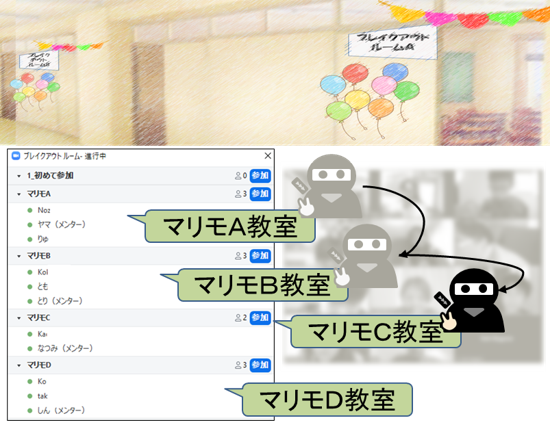
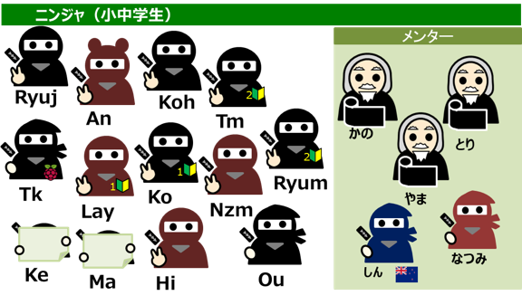
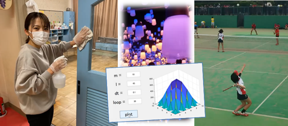
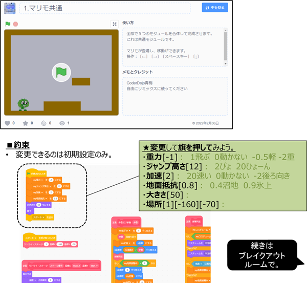
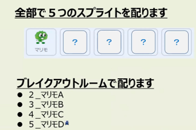
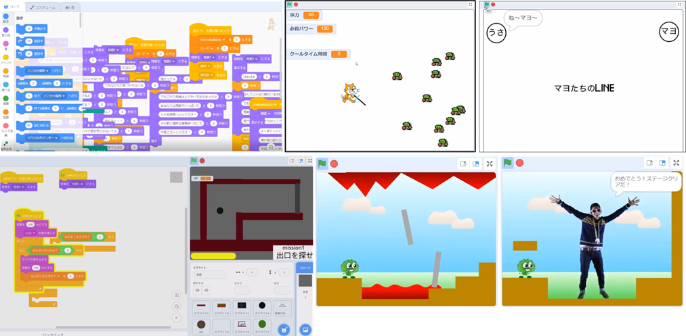

初の試みとして、メンター5名が待機しているブレイクアウトルームを、参加したニンジャ12組が順番に訪問して回る学園祭みたいなプログラミング倶楽部を開催しました。４つ用意してあるブレイクアウトルームを全部巡って、Scratchのスプライトをひとつずつ集めていくと、あのゲームが完成します。今回の試みは、ニンジャはマンツーマン形式で順番に合計４人のメンターからプログラミングの使い方や改造方法を教えてもらうことができ、メンターは訪問してくるニンジャみんなと会話ができるという楽しい面白い企画になりました。

ニンジャ11組とメンター5名、総勢16名以上が参加してくれました。そのうち初参加は2名です。

いつも会場の雰囲気を和ませてくれる大学生のなつみさんです。豊富なアルバイト経験やスポーツ、大学で勉強している数学について紹介してくれました。ソフトテニスのサーブがやけにカッコいいなと思ったら、10年以上の大ベテラン！ みんなのイイところを知ることが出来てとっても嬉しいです。

プラットフォームとなるマリモは、地面に着地して左右に加速やジャンプができるスプライト。改造していいパラメータは、重力、ジャンプ高さ、加速の速さなど。これをベースにスプライトをひとつずつ追加していく。追加するスプライトを手に入れるために、ブレイクアウトルームを探検するのだ。


毎月少しずつ完成していくRPG、新しいLINE風物語、スタート画面からエンディングまで暗闇を進むゾンビサバイバル、今日のテーマを爆速で改造してくれたスーパーマリモ、みんなとっても個性的な作品です。「ごんざれす」という有名な遊び方もニンジャから教わりました。今月もとても楽しくて３時間があっという間に過ぎてしまいました。いつかみんなで朝まで雑魚寝しながらCoderDojo青梅談義したいと妄想しちゃいました（＾＾）

子どもたちのScratch作品は↓ここで
CoderDojo青梅 Scratchスタジオ